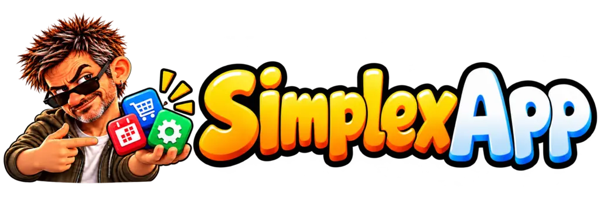

Il menu, a portata di QR.
I clienti consultano piatti e prezzi dal telefono e inseriscono la propria ordinazione al tavolo.

Parliamone →SIMPLEXAPP PRESENTA
SimplexRisto.
Menu, tavoli e comande nello stesso posto. Dal primo ordine al piatto pronto, tutta la squadra segue il servizio.
Per i clienti al tavolo. Per chi lavora in sala. Per la cucina.
Comanda ricevuta: la cucina può iniziare.
PENSATO PER IL SERVIZIO
Gli strumenti essenziali per accompagnare ogni comanda, senza perdere il filo tra sala e cucina.
I clienti consultano piatti e prezzi dal telefono e inseriscono la propria ordinazione al tavolo.
I camerieri inseriscono le comande da smartphone e seguono i tavoli durante il servizio.
Un pannello dedicato raccoglie gli ordini e permette alla cucina di segnare l’avanzamento dei piatti.
L’amministratore configura menu, prezzi, tavoli e personale, con accessi dedicati ai diversi ruoli.
DALLA SALA ALLA CUCINA
Il cliente apre il menu dal QR. Oppure il cameriere prende l’ordine dal telefono.
La comanda raggiunge il pannello cucina, con tavolo, quantità e note.
La cucina segna i piatti pronti. La sala segue lo stato e porta tutto al tavolo.
La prima versione si concentra sulle ordinazioni: magazzino, cassa, pagamenti degli ordini e fatturazione sono esclusi.
IL MONDO SIMPLEXAPP
Turni, strumenti per il lavoro e altre soluzioni digitali: ritrova tutte le applicazioni nel catalogo SimplexApp.
Esplora le nostre app →IL PROSSIMO SERVIZIO
Raccontaci come lavori. Partiamo dalle esigenze della tua sala.